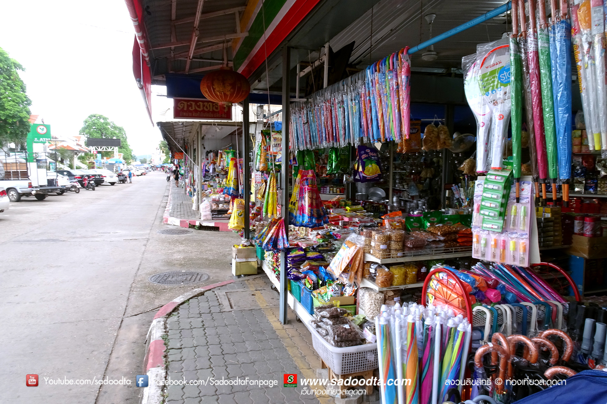
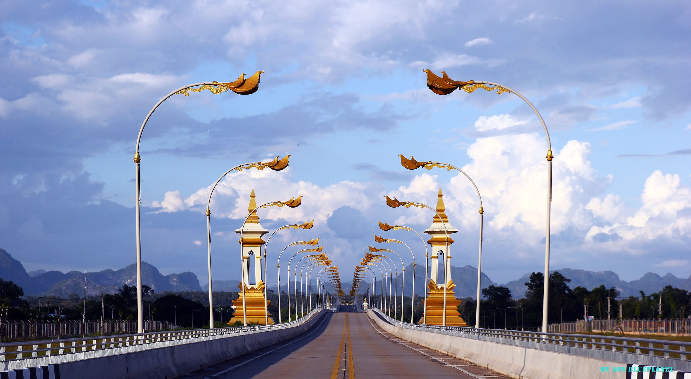

จังหวัดมุกดาหาร
คำขวัญประจำจังหวัด
หอแก้วสูงเสียดฟ้า ภูผาเทิบแก่งกะเบา แปดเผ่าชนพื้นเมือง ลือเลื่องมะขามหวาน กลองโบราณล้ำเลิศ ถิ่นกำเนิดลำผญา ตระการตาชายโขง เชื่อมโยงอินโดจีน
ในปลายสมัยกรุงศรีอยุธยาทางฝั่งซ้ายของลำน้ำโขงแขวงสวันเขต มีหมู่บ้านชุมชนใหญ่ชื่อบ้านหลวงโพนสิน ซึ่งตั้งอยู่ที่บริเวณพระธาตุอิงฮัง แขวงสวันเขตในปัจจุบัน โดยมีเจ้าจันทรสุริยวงศ์ปกครอง มีบุตรชายชื่อเจ้ากินรี ซึ่งต่อมาได้ข้ามลำน้ำโขงมาฝั่งขวาที่บริเวณปากห้วยมุก สร้างบ้านแปลงเมืองขึ้น ณ ที่นั้น ในปี พ.ศ. 2310 แล้วเสร็จในปี พ.ศ. 2313 และตั้งชื่อเมืองว่า “มุกดาหาร” อันเกิดจากศุภนิมิตรที่พบเห็นในขณะที่กำลังสร้างเมือง ชาวเมืองทั่วไปเรียกมุกดาหารว่า เมืองมุก ในสมัยพระเจ้าตากสินมหาราช ได้พระราชทานบรรดาศักดิ์ ให้เจ้ากินรีเป็นพระยาจันทรศรีสุราช อุปราชามัณฑาตุราช ดำรงตำแหน่งเจ้าเมืองคนแรกของเมืองมุกดาหาร เมื่อปี พ.ศ. 2321 เดิมเมืองมุกดาหารมีฐานะเป็นเมืองขึ้นการปกครองกับมณฑลอุดร ต่อมาเมื่อปี พ.ศ. 2450 มีการปรับปรุงการปกครองมณฑลอุดรเป็นจังหวัด และเมืองมุกดาหารจึงถูกยุบเป็นอำเภอเมืองมุกดาหาร ขึ้นการปกครองกับจังหวัดนครพนม จนกระทั่งปี พ.ศ. 2525 รัฐบาลได้ออกพระราชบัญญัติจัดตั้งจังหวัดมุกดาหารขึ้นเป็นจังหวัดที่ 73 ของประเทศไทย และเป็นจังหวัดที่ 17 ของภาคอีสาน มุกดาหารมีพื้นที่ทั้งหมด 4,339 ตร.กม. แบ่งการปกครองออกเป็น 7 อำเภอ คือ อำเภอเมือง คำชะอี นิคมคำสร้อย ดอนตาล ดงหลวง หว้านใหญ่ และหนองสูง
ตลาดอินโดจีน
ตั้งอยู่บริเวณถนนสำราญชายโขงในตัวเมืองมุกดาหาร หน้าวัดศรีมงคลใต้ เป็นแหล่งรวมสินค้านำเข้าจากนานาประเทศ เช่น รัสเซีย จีน เวียดนาม และสาธารณรัฐประชาธิปไตยประชาชนลาว จำหน่ายทั้งราคาส่งและปลีก ส่วนมากจะเป็นเสื้อผ้า เครื่องนุ่งห่ม เซรามิก เครื่องใช้ไฟฟ้า เครื่องอุปโภคและบริโภคต่าง ๆ นอกจากสินค้าที่นำเข้ามา จำหน่ายจากต่างประเทศแล้วยังมีสินค้าพื้นเมืองของชาวมุกดาหารมาจำหน่ายอีกด้วย เช่น ผ้าไหม ผ้ามัดหมี่ และสินค้าท้องถิ่นอื่น

สะพานมิตรภาพไทย - ลาว
สะพานมิตรภาพไทย-ลาวแห่งที่ 2 สะพานเชื่อมระหว่างแขวงสะหวันนะเขตของ สปป.ลาว กับ จังหวัดมุกดาหารของไทย ได้มีพิธีเปิดอย่างเป็นทางการเมื่อวันที่ 20 ธันวาคม 2549 และเปิดให้ใช้สะพานในเดือนมกราคม 2550 สะพานมิตรภาพไทย-ลาวแห่งนี้ช่วยอำนวยความสะดวกในการเดินทางไป-มาของประชาชนและการขนส่งสินค้าระหว่างประเทศไทย กับ สปป.ลาว ส่งผลให้เกิดการขยายตัวทางการค้า การลงทุนและการท่องเที่ยวระหว่างไทยกับลาวมากยิ่งขึ้น ถือว่าสะพานมิตรภาพไทย-ลาว แห่งที่ 2 ช่วยสร้างความแข็งแกร่งในการเชื่อมโยงเศรษฐกิจภายใต้โครงการพัฒนาเศรษฐกิจตามแนวตะวันออกและตะวันตก (East-West Economic Corridor) ระหว่างประเทศลาว ประเทศไทย และประเทศเวียดนาม ผ่านเส้นทางถนนหมายเลข 9 ซึ่งขณะนี้กำลังขยายเครือข่ายของเส้นทางถนนระหว่างประเทศสายนี้ไปถึงพม่าด้วย นับเป็นปัจจัยที่สนับสนุนความร่วมมือทางเศรษฐกิจของภูมิภาคอินโดจีน และขับเคลื่อนเศรษฐกิจของลาวให้เติบโตต่อเนื่อง รวมทั้งกระตุ้นการค้าชายแดนไทย-ลาว ทางจังหวัดมุกดาหาร-สะหวันนะเขตด้วย
ข้อมูลติดต่อ
ททท. สำนักงานนครพนม
พื้นที่รับผิดชอบ: นครพนม,มุกดาหาร,สกลนคร
184/1 ถ.สุนทรวิจิตร ต.ในเมือง อ.เมือง จ.นครพนม 48000
โทรศัพท์. 0 4251 3490-1
ข้อมูลผู้จัดทำ
นายจตุรวิทย์ จันทรศรีวงศ์ รหัสประจำตัว 5796002599